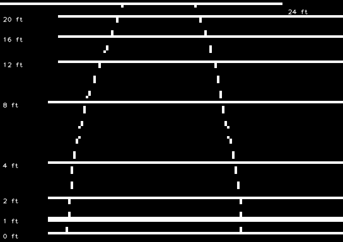
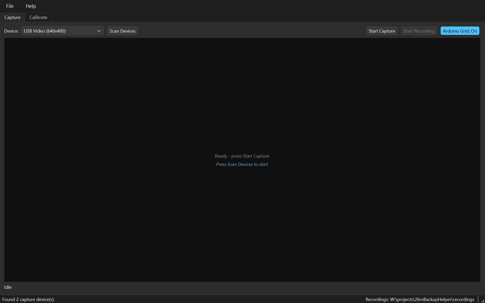
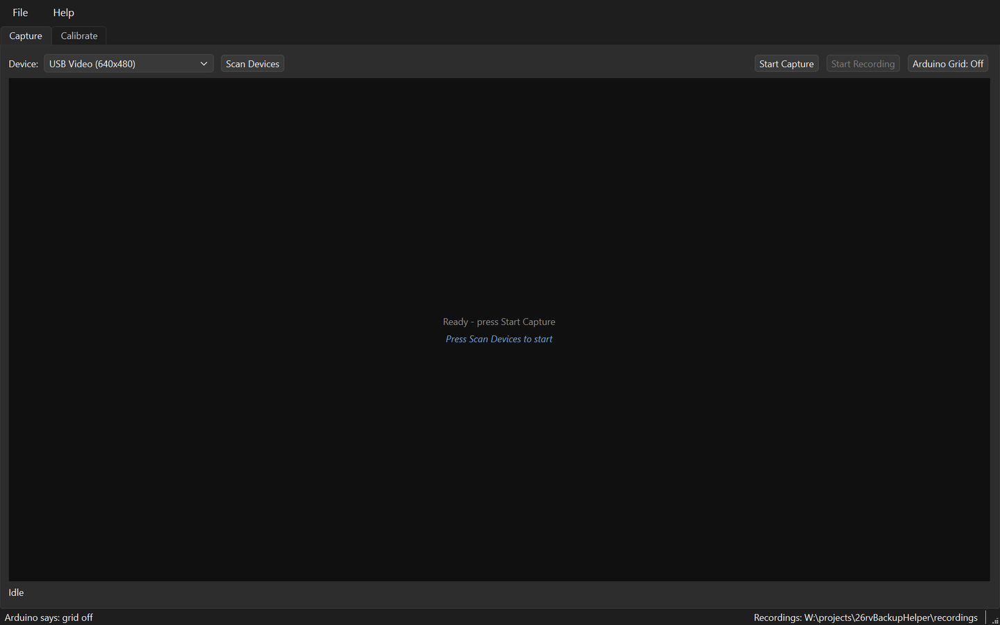
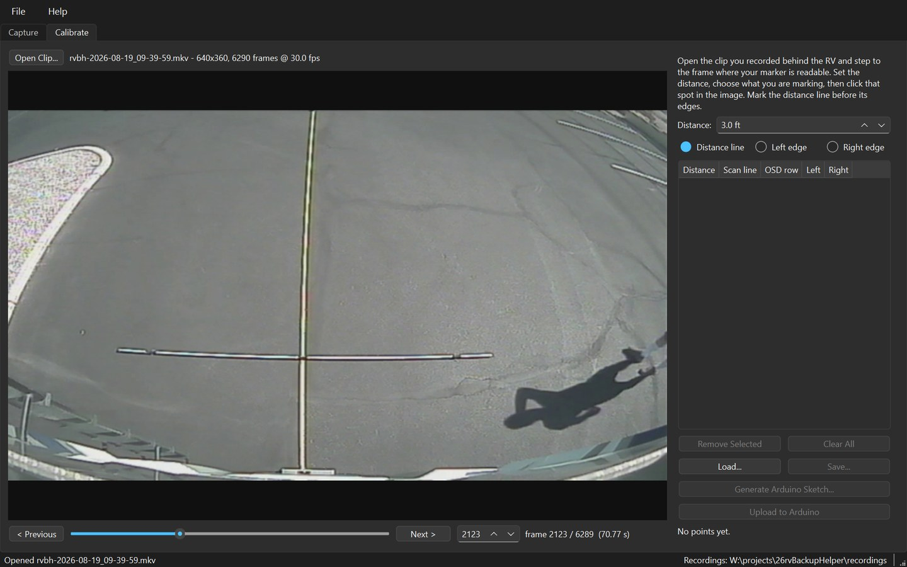
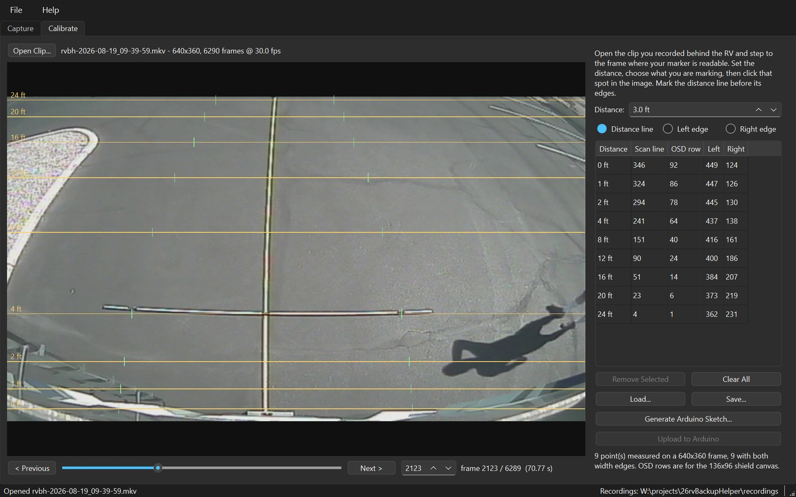

Your backup camera shows a picture and nothing else — no way to tell whether that post is four feet back or twelve. RV Backup Helper measures your vehicle from your camera once, then generates and flashes an Arduino sketch that draws those distances straight onto the live video.
Version 1.0.0 · Windows 10 and 11 · Python is bundled, nothing else to install · MIT licensed, no account, no telemetry

Anyone who reverses something large using a camera that shows distance as well as a mirror does — which is to say, not at all.
The factory camera came with the coach and the factory display draws nothing on it. This adds the lines without replacing either, and without a trip to an installer.
The last three feet are the ones that cost money. A 1 ft line, drawn heavier than the rest, is the difference between stopping and finding out.
A generic sticker-on guideline assumes a vehicle it has never seen. These lines come from a pole laid in your own driveway, behind your own bumper.
One calibration per coach, saved as a small JSON file, regenerated into a sketch in one click. The measurement is the work; everything after it is repeatable.
An Uno, a Video Experimenter shield and about forty dollars of parts. The generated sketch is plain, commented C you can read, and the whole toolchain is in the repository.
Replacing a working display to gain guide lines is an expensive way to solve this. The camera and the screen you already own stay exactly where they are.
An RV backup camera is analogue composite video — the same signal television used before HDMI. That is unglamorous, and it is exactly why this works.
Composite is a single wire carrying brightness and timing together. A chip can lock to that timing and inject extra brightness on top without understanding the picture at all. The trick is old: broadcast character generators did it for captions in the 1970s, and radio-controlled aircraft have used it for decades to put battery voltage over a live camera feed.
The alternative — digitise the video, draw on it, re-encode it — is easier to write and wrong for this job, because it puts a computer between the driver and the rear view.
When it fails, it fails to nothing. The overlay adds no stage to the signal path. If the board dies, the camera passes straight through and the driver simply sees no lines — not a frozen frame, not a blank screen.
A calibration is nothing more than a short list of correspondences between the real world and the picture: at 4 ft behind the bumper the ground appears on scan line 241, and the RV is as wide as the picture from column 437 to column 138.
The width corridor is drawn as a polyline through the points you marked rather than a straight taper, because a wide-angle lens bends what is really a straight path into a curve across the picture. Every extra distance you measure makes that curve truer.
The distance lines are deliberately not tapered to suggest perspective. That would imply a width nobody measured.
The overlay is monochrome, and that is hardware, not taste. It is one bit per pixel, and NTSC colour would need a subcarrier the microcontroller cannot generate while it is also locking to the camera. Line weight is therefore the only hierarchy available — which is why the 1 ft “about to touch something” line is drawn double.
Two pieces of hardware do the work in the vehicle, and one dongle borrows the camera onto a PC for an afternoon while you measure.
| Part | Why, and what to watch |
|---|---|
| Arduino Uno R3 or Duemilanove |
Must be an ATmega328P. Not an Uno R4 — the video library is hand-written AVR assembly and will not run on the R4’s Renesas chip. Leonardo and Mega are out too. A clone works, but wants the CH340 driver installed before you leave for the campground. |
| Nootropic Design Video Experimenter shield |
The overlay hardware itself. It sits on the Uno and carries the sync separator. Two settings
on it — a SYNC SELECT jumper and an OUTPUT SELECT slide switch
— must match the sketch you flash. |
| USB video capture dongle | Any UVC composite grabber, to record the camera onto the PC for the calibration session. It is not needed once the board is flashed and in the vehicle. |
| RCA leads, and a long pole | Composite is one signal wire and a ground. The pole is the measuring instrument: laid across the driveway at each distance, with the RV’s width marked on it. |
| A Windows PC | Windows 10 or 11, for the calibration session and the upload. Nothing about the finished rig needs a computer — the board runs on its own in the vehicle. |
Check the hardware before you buy the rest of it. Help → Check Hardware names the board by its USB id — so an Uno R4, a Leonardo or a Mega is caught by name rather than left to fail at upload — and says whether a capture device is present. It cannot see the shield, which is passive and enumerates nothing, and it cannot tell a composite camera from an AHD one. That last test still happens at the vehicle.
One afternoon, most of it spent walking a pole backwards and forwards. Steps 1 and 2 are on the bench, 3 to 4 are at the vehicle, and everything from 5 onwards happens at a desk with a recorded clip — so a misclick costs a click, not another trip outside.
The shield sits inline exactly where you originally tapped the camera feed. For the calibration session the output goes to the USB grabber so the PC can record it; in the vehicle it goes to the display instead.
Set the shield’s two controls for overlay use: the SYNC SELECT jumper on
the two rightmost pins, so sync is taken from the incoming video, and
OUTPUT SELECT on Overlay. Leave the small R4 pot
fully counter-clockwise.
A torn or doubled overlay is not broken hardware. If a pattern appears but drifts, tears, or shows twice, the flashed sketch and the jumpers disagree — a free-running build slides against incoming video. Flashing the matching build fixes it with no wiring change at all.
Flash arduino/rvbhBringUp/ first. It draws a border, three labelled reference
rows and the current mode, so that any later problem is known to be in the calibration rather
than in the rig.
Look for all four border edges — a missing side means the frame buffer is not the size the sketch thinks it is. And watch the on-board LED: a steady blink is the sketch reporting that it could not allocate its frame buffer, so nothing will ever be drawn. It blinks rather than failing silently, because the shield still passes video through and you would otherwise just see no grid and no reason.
Press Scan Devices. Devices are listed by their Windows name, so the grabber is easy to tell from a webcam. The scan opens and closes each device in turn, so it takes a few seconds; it runs off the interface thread, so the window stays responsive.
A device that opens but is receiving nothing is listed as no video rather than hidden — hover it for the reason. Starting capture on one of those is fine and often correct: the preview says “Waiting for video signal” and begins the moment video arrives, which is exactly what an RV camera powered only in reverse gear needs.
Close OBS first. Only one application can hold a capture device at a time. With OBS on the grabber, RV Backup Helper opens the device and receives nothing — while the video is plainly visible in OBS, which makes it look like the app is broken.

Arduino Grid: On / Off blanks the shield’s overlay so the camera passes through clean. Record calibration footage with it off — a grid burned into the clip sits directly on top of the pole markings you need to click afterwards. That mistake once cost a whole session.
Then lay a long pole across the driveway at each distance in turn, with the RV’s width marked on it, pausing a few seconds at each so there is a clean frame to find later. Six or seven distances is plenty. Every distance comes from its own frame, and the application records which.
It takes a couple of seconds to answer, because opening a serial port resets the Arduino and the board has to boot first. The setting lives in the board’s own EEPROM, so it survives that reset, an unplug, and closing the application.

The left half is a clip browser — Open Clip…, the picture, and a transport with a slider, a frame box and Previous/Next. A clip you have just recorded is loaded here automatically.
Clips are MJPG-encoded, which compresses each frame on its own, so every frame decodes independently and stepping to an exact frame is exact. That matters more here than file size: a calibration measures one specific frame.
The cursor becomes a crosshair over the picture, because clicking the picture is how everything here is done.

Set Distance to what this pole position represents, leave the radio button on Distance line, and click the pole in the picture. An amber guide is drawn where you clicked, so you can see at once whether it landed on the mark. Re-clicking the same distance replaces the earlier point rather than stacking two guides.
Then switch to Left edge or Right edge and click the width markings; a green tick shows where each landed. Mark the distance line before its edges — an edge with no line has nothing to attach to.
Step to the next frame and repeat. The table fills in as you go: the distance you typed, the scan line you clicked, the OSD row that rescales to on the shield’s 136×96 canvas, and the two width edges.
Maximise the window before marking. Clicks resolve to about a scan line and the picture is scaled to fit, so a bigger picture is a finer measurement. The summary underneath warns if two distances collapse onto the same OSD row — the capture is several times taller than the shield’s canvas, and the hardware cannot draw them apart.

Save… writes a small JSON file. Of the three things this process produces, it is the only one that matters: the clip is large and disposable, the sketch is generated in one click, and this cannot be reproduced without another trip to the RV.
The scan line is stored with the frame height it was measured against, because a scan line means nothing without knowing what height it came from. Opening a clip of a different frame size therefore clears the points, deliberately: silently mixing the two would produce a calibration that looks fine and is wrong.
Generate Arduino Sketch… turns the measurements into C. Each row carries the scan line and the frame it came from, so a line that looks wrong on the vehicle can be traced back to the moment it was measured.
The header carries the rest of the provenance — source clip, capture size, timestamp, board, library and jumper requirements — so the file stands on its own if it is ever opened away from the project. Versioning by name works well, because the calibration each sketch was built from is committed alongside it.
Never hand-edit a generated sketch. Regenerating from the JSON is one
click, and the file says GENERATED FILE at the top for a reason. Tables and
labels live in flash rather than RAM, which is not tidiness: the video frame buffer takes
1632 of the Uno’s 2048 bytes at run time, and keeping the tables out of RAM is what
leaves enough stack to run at all.
Upload to Arduino compiles and flashes with arduino-cli —
exactly what the IDE’s upload button does. The Arduino IDE is never required.
It takes a few seconds and reports the board’s own size summary when it finishes, so you
see what actually landed rather than an assumption.
It offers the last sketch you generated, remembered between sessions, so a sketch saved under
its own name is still what Upload flashes after a restart. Help → Check
Toolchain answers the same question with no board attached, by compiling something and
reporting which arduino-cli, data directory and libraries it used — the
compile is the point, because every check short of building something once insisted a
missing AVR core was installed.
Arduino Grid → On. If you blanked the overlay to record calibration footage, it is still blanked — and the setting lives in the board’s EEPROM, so it survives everything, including a reflash of the same sketch.
Move the shield’s output back to the display, and that is the job done. Horizontal lines mark your measured distances, each label set into a break in its own line so there is no doubt which belongs to which. The dashed pair is the width of your RV, drawn through the points you marked. The 1 ft line is heavier: it is the “about to touch something” line.
Nothing needs a computer from here on. The board runs on its own, and the camera passes through it whether or not the sketch is doing anything.
Worth reading before you buy a shield, rather than after.
It cannot skip the measuring. There is no template, no vehicle database and no guess: the lines exist because you laid a pole behind your own bumper and clicked it. That is an afternoon, once, and it is the whole reason the result is worth trusting.
It is not a proximity sensor and not a warning system. It draws where the ground was when you measured it, on flat ground. A slope, a kerb, or something hanging above the ground is not what the lines describe. It is a better rear view, not a substitute for using it.
The application runs on Windows 10 and 11, because finding and opening capture devices by name goes through DirectShow. The board and the shield, once flashed, have nothing to do with any operating system.
Free. No account, no ads, no telemetry, and the only network call the application ever makes is checking whether the published manual is reachable before it opens it.
rvBackupHelperSetup-1.0.0.exe, about 67 MB. Python is
bundled, so there is no prerequisite of any kind. The install is per-user: no
UAC prompt, and nothing lands in Program Files.
The wizard runs the hardware check on the page after Welcome, before a single file is written, so somebody with no grabber finds out in five seconds rather than after a download. The 295 MB Arduino AVR core is a tick box at the end, and only uploading needs it.
Download for WindowsWhat you want if you intend to change the code. Python 3.14 or newer, then one command sets up the Arduino toolchain and proves it by compiling the real sketch.
The TVout fork the shield needs is committed in arduino/libraries — there is
nothing to install and no wrong version to install by mistake.
The installer is not code-signed. Windows shows a SmartScreen warning the first time — choose More info, then Run anyway. Signing certificates cost money every year, and this is free software. If you would rather not take that on faith, the from-source route above builds the same application out of the same repository.
The walkthrough above is the short version. The manual is five pages with the screenshots, the traps, and the reasoning behind the awkward decisions — and F1 in the application opens it.
What to take, and the order to do it in, on one page.
All of it, MIT licensed — including the sketch generator and the vendored video library, which carries its own MIT licence beside it.
Neither of these is ours; both are worth reading before ordering.
Free desktop tools built the same way.
RV Backup Helper is free and open source. There is no licence to buy, no seat to renew, no account to make, and nothing about you is collected or sent anywhere. That is also why software like this is hard to sustain: there is no subscription to bill and no data to sell, so nothing pays for the work behind it.
Most of what is in here came from getting it wrong first — a whole calibration session lost to a grid left switched on, a working day lost to a video library that compiles perfectly and then answers nothing. Those afternoons are the reason the traps are written down, and the reason the application checks the things it checks.
If this saved you a new head unit, an installer’s afternoon, or a bumper, please consider chipping in.
Secure payment through PayPal — no account required, any amount appreciated. Thank you for supporting independent, open source software.